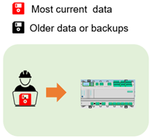
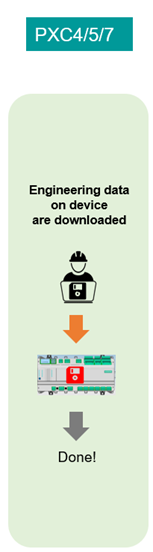
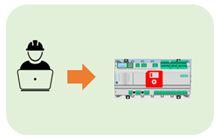
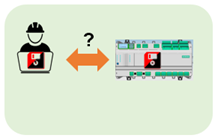
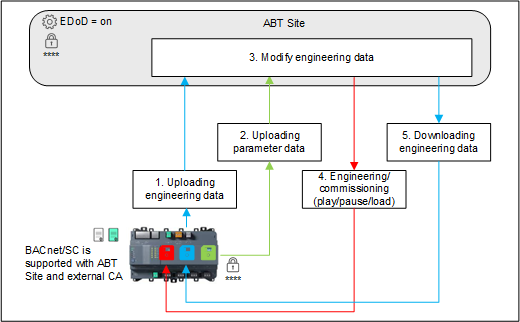

设备上的工程数据 (EDoD)
设备上的工程数据允许工具用户将 PXC4/5/7 自动化站的工程数据存储在设备本身上。加载的工程数据包含以后更改 PXC4/5/7 设备（包括编程）所需的所有数据。 PC/laptop 上不再需要离线ABT 站点项目数据。
现有（已设计/commissioned）设备的先决条件是ABT 站点项目数据已存储在设备上并且ABT 站点用户凭据已知。必须提供用于通信的可选证书。

此功能的可用性取决于国家/地区的需要。某些国家/地区不会使用 EDoD，因为他们将项目数据存储在 Branch Office Server (BOS) 上。
Initial engineering/commissioning 工程现状：
| 
|
 |
Recurring engineering/commissioning (Engineering data already exists on device) Use Case 1：PC 上没有可用的离线 ABT 现场工程数据 (ED)/laptop
|  | |
Use Case 2：离线 ABT 现场项目，工程数据 (ED) 可在 PC 上使用/laptop
|  |
设备上的工程数据处理技术原理：

当工程数据存储在设备上时，这些原则适用。前提是原始项目用户凭据已知。没有保存后门密码。如果没有已知的用户凭据，则无法创建控制程序。除了用户凭据之外，还必须提供可选的通信证书。
确保功能Engineering data on device被激活在Settings项目选项卡下Device defaults.
- 离线ABT PC /laptop 上的站点项目数据仍然可以并行使用，但被视为设备上存储的数据的备份。
- 下载/上传时间可能会有所不同，具体取决于工程设备的设备类型、连接介质（IP、云、WLAN）和程序大小。
- MS/TP 设备 (PXC4.M16..) 上的工程数据是可能的，但不推荐，因为 MS/TP. 的性能非常低，请改用板载 WLAN 热点连接。
NOTICE

由于缺少用户（凭据）或可选证书，无法访问 PXC4/5/7 自动化站
在这种情况下，相关 PXC4/5/7 的工程数据将丢失。必须清除设备并重写数据。所以：
- The project user credentials and optional certificates for communication must be passed on to the customer for safekeeping during project hand-over.
- It is the customer’s responsibility to keep this information safe (cybersecurity risk).